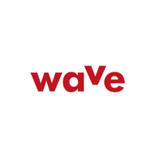
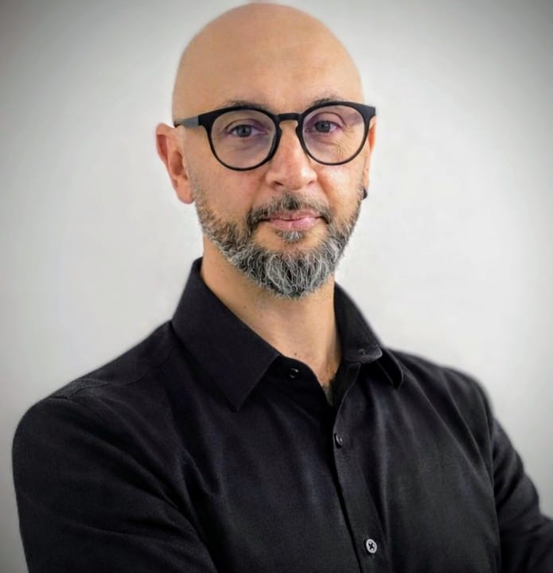
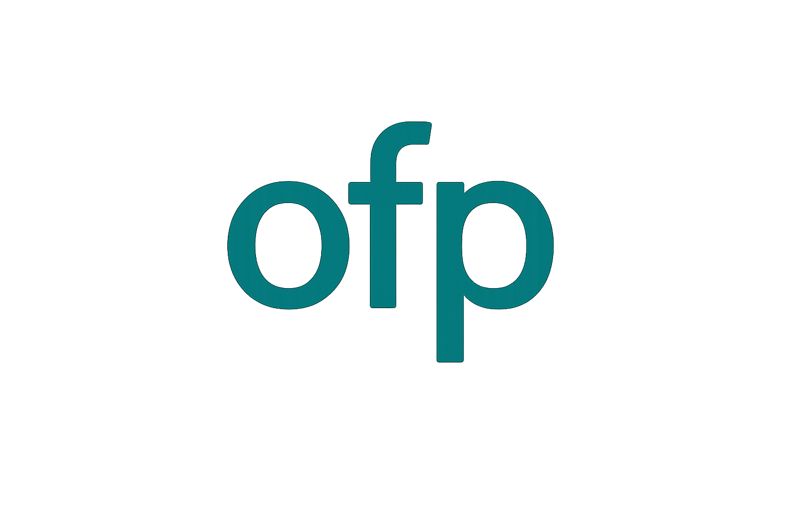
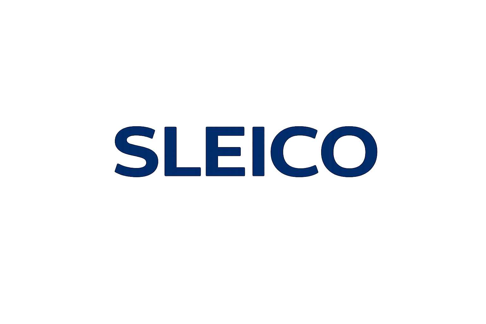
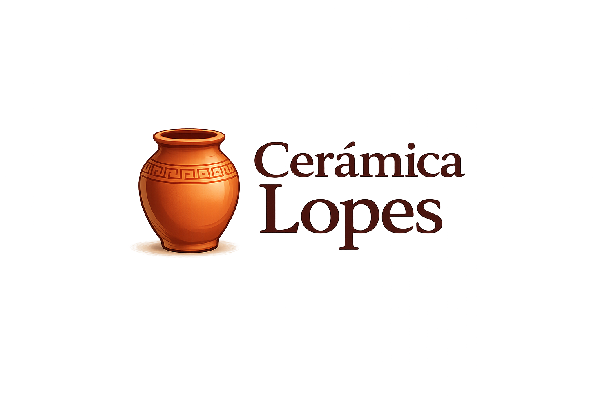

Jan 2026 - Jun 2026
Consultoria técnica em sistemas de informação, otimização de processos de negócio e fluxos de trabalho.
Licenciado com experiência na implementação de sistemas de informação e mobilidade empresarial. Background técnico sólido construído ao longo de mais de uma década em ambientes internacionais. Foco no rigor operacional e na transição digital das organizações.

Percurso desenvolvido em ambientes técnicos exigentes, com progressão para coordenação de equipas e experiência recente em consultoria de sistemas de informação.

Consultoria técnica em sistemas de informação, otimização de processos de negócio e fluxos de trabalho.

Reintegração no mercado português com aplicação de forte competência técnica.

Evolução para líder de equipa com coordenação de projetos técnicos complexos.
Adaptação a um novo ambiente profissional em contexto internacional e exigente.

Gestão de operações diárias e equipas.
Licenciatura concluída em Engenharia de Sistemas Informáticos, com base sólida em software, sistemas, redes e dados.
Universidade Politécnica do Cávado e do Ave
Síntese das principais competências técnicas, linguísticas e interpessoais relevantes para funções em tecnologia e consultoria.
Linguagens e lógica aplicada
Infraestrutura, conectividade e operação
Modelação e consulta de dados
Produtividade, colaboração e análise
Perfil orientado para organizações que valorizem rigor operacional, maturidade profissional e evolução tecnológica consistente.